Email: 26113050148 [at] m.fudan [dot] edu [dot] cn
Representative Papers
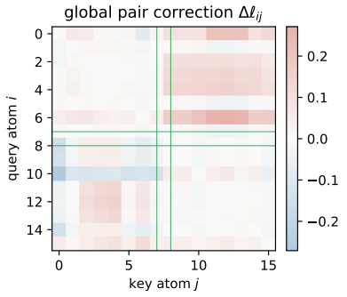
GSF-χ: Global Stereochemical Fields for Chiral Graph Transformers Jiaqing Xie, Yuxin Wang†, Xipeng Qiu† arXiv preprint, 2026
arXiv /
Code
TL;DR: Enantiomers share atoms, bonds, and pairwise distances yet behave differently in chiral environments, so molecular encoders must respect rotations without going blind to reflection. GSF-χ lets every stereogenic unit modulate all pairwise attention through a reflection-even phase field, while a handedness pseudoscalar χ reverses a Chiral-RoPE on latent query–key blocks; a C2 projection keeps ECD peak counts and positions mirror-even and peak signs mirror-odd. GSF-χ leads every central-ECD output and improves axial Rotation and Symbol by 12.6% and 7.9% over the strongest baseline.
TL;DR: Rotary position encodings make attention sensitive to relative position, but prior graph versions assign each node a rotation from spectral coordinates, so the rotary factor between two nodes cannot distinguish the routes connecting them. AW-RoPE places the rotations on edges and sums the transported features over all walks, so contributions along different routes can reinforce or cancel: an exact variant evaluates the complete sum by a differentiable linear solve, and a sparse variant truncates it at finite depth. Across five synthetic tasks both variants reduce nRMSE by 15–58% relative to the strongest baseline, and on real superpixel, peptide and OGB benchmarks the sparse recurrence attains the best mean on every dataset with Performer kernels and on twelve of thirteen datasets with GIN.
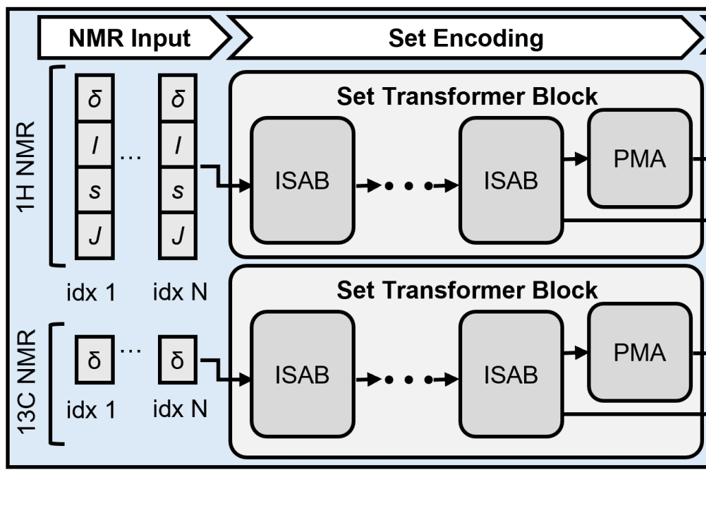
NMRTrans: Structure Elucidation from Experimental NMR Spectra via Set Transformers
Liujia Yang, Zhuo Yang, Jiaqing Xie, Yubin Wang, Ben Gao, Tianfan Fu, Xingjian Wei, Jiaxing Sun, Jiang Wu, Conghui He, Yuqiang Li, Qinying Gu
KDD, 2026
Paper /
Code
TL;DR: Recent NMR structure-elucidation models rely heavily on large corpora of computed spectra and drop sharply on experimental measurements. We build NMRSpec, a large-scale corpus of experimental 1H and 13C spectra mined from chemical literature, and propose NMRTrans, which models spectra as unordered peak sets and aligns the model's inductive bias with the physical nature of NMR. To our knowledge NMRTrans is the first NMR Transformer trained solely on large-scale experimental spectra, improving Top-10 Accuracy over the strongest baseline by +17.82 points (61.15% vs. 43.33%).
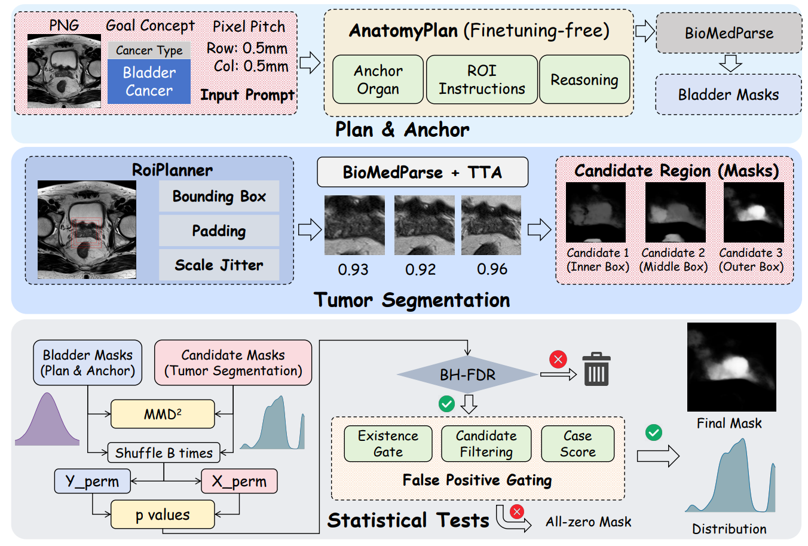
R²-Seg: Training-Free OOD Medical Tumor Segmentation via Anatomical Reasoning and Statistical Rejection
Shuaike Shen, Ke Liu, Jiaqing Xie, Shangde Gao, Chunhua Shen, Ge Liu, Mireia Crispin-Ortuzar, Shangqi Gao
CVPR, 2026 (Oral) Paper /
Code
TL;DR: Foundation models for medical image segmentation struggle under out-of-distribution shifts, often producing fragmented false positives on OOD tumors. R²-Seg is a training-free Reason-and-Reject framework: an LLM-guided anatomical reasoning planner localizes organ anchors and generates multi-scale ROIs, then two-sample statistical testing rejects candidates from a frozen foundation model (BiomedParse) that are not significantly different from normal tissue. On multi-center, multi-modal tumor segmentation benchmarks, R²-Seg substantially improves Dice, specificity, and sensitivity over strong baselines with no parameter updates.
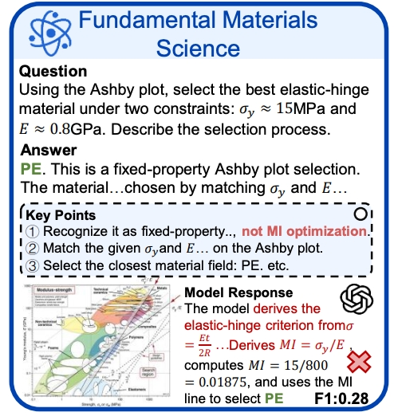
OmniMatBench: A Human-Calibrated Multimodal Reasoning Benchmark Across 19 Materials Science Subfields
Wanhao Liu, Jiaqing Xie, Qian Tan, Weida Wang, Jue Wang, Ran Sun, Zhuo Yang, Wanli Ouyang, Lei Bai, Tianfan Fu, Lu Chen, Xin Chen, Yuqiang Li
arXiv preprint, 2026
arXiv /
Code
TL;DR: Existing materials benchmarks mainly focus on property prediction, knowledge QA, or characterization understanding, leaving the broader reasoning process from materials knowledge to application underexplored. OmniMatBench is a human-calibrated multimodal reasoning benchmark with 3,171 expert-curated QA and calculation problems across 19 materials-science subfields. Evaluating 13 open-source and closed-source MLLMs, the best model achieves only a 0.372 overall score, revealing a substantial gap in current materials-science reasoning and a foundation for reliable AI assistants in materials research.
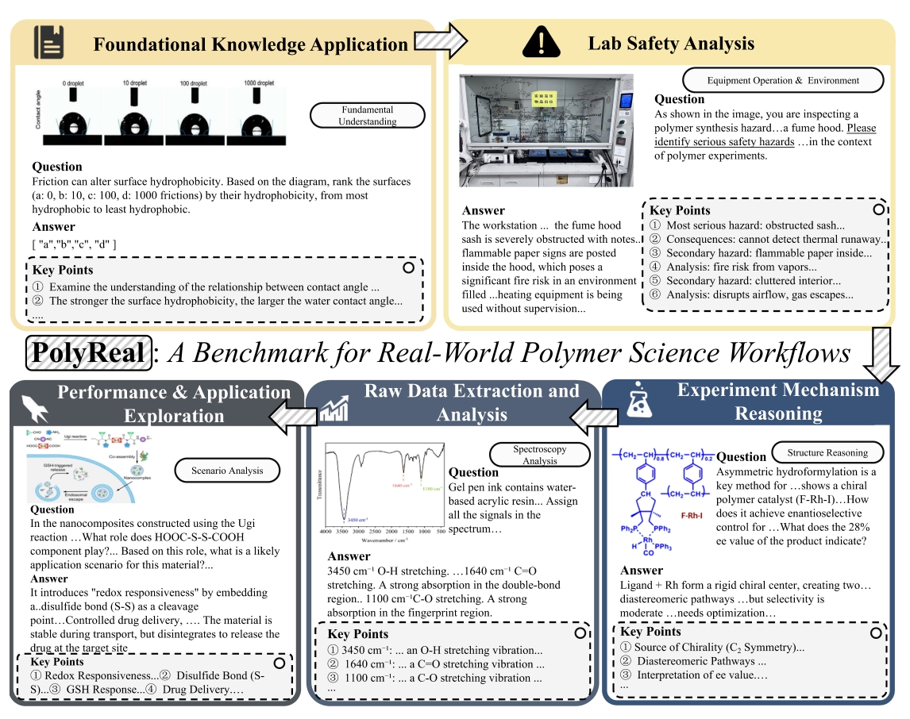
PolyReal: A Benchmark for Real-World Polymer Science Workflows
Wanhao Liu, Weida Wang, Jiaqing Xie, Suorong Yang, Jue Wang, Benteng Chen, Guangtao Mei, Zonglin Yang, Shufei Zhang, Yuchun Mo, Lang Cheng, Jin Zeng, Houqiang Li, Wanli Ouyang, Yuqiang Li
CVPR, 2026
arXiv /
Code
TL;DR: Multimodal large language models excel in general domains but struggle with complex, real-world science. PolyReal is a multimodal benchmark grounded in real-world scientific practice that evaluates MLLMs across the full lifecycle of polymer experimentation, covering foundational knowledge application, lab safety analysis, experiment mechanism reasoning, raw data extraction, and performance & application exploration. Evaluating leading MLLMs reveals a capability imbalance: models do well on knowledge-intensive reasoning but drop sharply on practice-based tasks such as lab safety analysis and raw data extraction, exposing a severe gap between abstract scientific knowledge and its practical, context-dependent application.
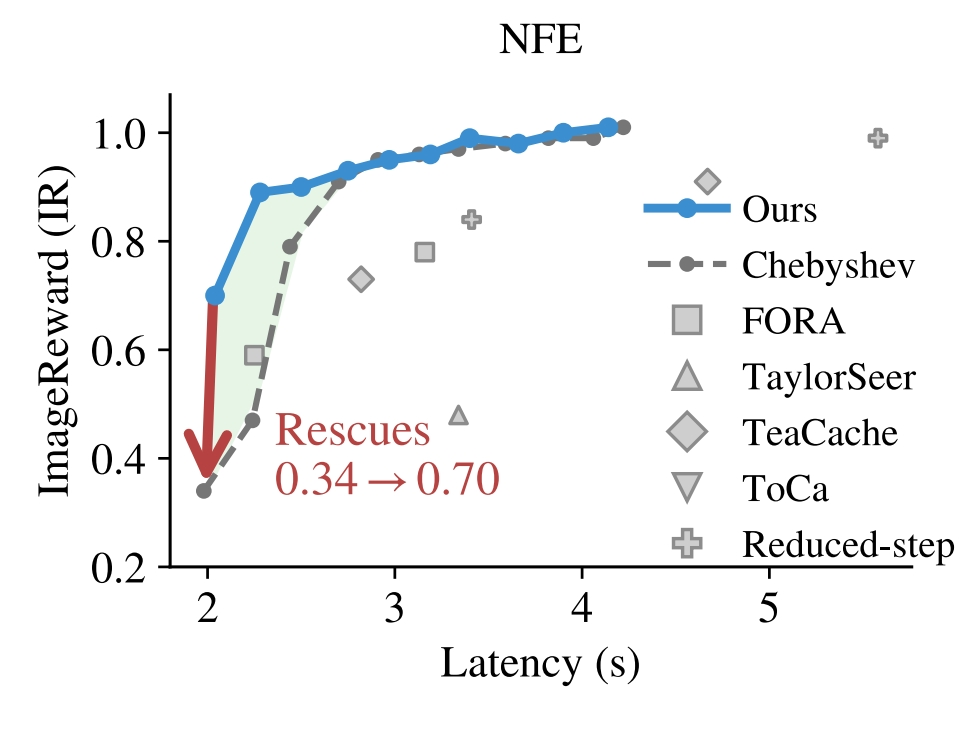
Disagree to Accelerate: Closing the Loop on Diffusion Feature Forecasts
Yanchao Li, Jiaqing Xie, Ben Gao, Wanhao Liu, Yanbo Wang, T. Y. Tsui, Jinfei Liu, Yuqiang Li, Tianfan Fu
arXiv preprint, 2026
arXiv /
Code
TL;DR: Training-free feature forecasting accelerates diffusion sampling by predicting features at skipped denoising steps, but open-loop caches trust the forecast in full at every skipped step. We show reliability can be observed from the cache itself: two forecasts agree where the feature trajectory is smooth and diverge where prediction turns hard, and their disagreement is a free runtime signal. RACER uses it as a training-free closed-loop controller that shrinks uncertain forecasts toward the last computed feature and, at the riskiest steps, refreshes the feature while repaying the cost by skipping a later one. At equal denoiser evaluations RACER improves the strongest open-loop baseline across SD3.5-Large, FLUX.1-dev, Wan2.1-14B, and HunyuanVideo on DrawBench, VBench, and COCO.
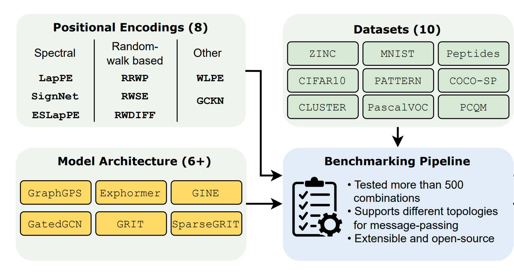
Benchmarking Positional Encodings for GNNs and Graph Transformers
Florian Grötschla, Jiaqing Xie, Roger Wattenhofer
KDD, 2026 (Datasets & Benchmarks) arXiv /
Code
TL;DR: Positional Encodings (PEs) are essential for injecting structural information into GNNs, particularly Graph Transformers, yet their empirical impact remains insufficiently understood. We introduce a unified benchmarking framework that decouples PEs from architectural choices, comparing 8 GNN and Transformer models, 9 PEs, and 10 synthetic and real-world datasets — over 500 model-PE-dataset configurations. Weisfeiler-Lehman distinguishability and other expressiveness proxies do not reliably predict downstream performance; highly expressive PEs can even degrade real-world tasks, while several simple, previously overlooked model-PE combinations match or outperform recent state-of-the-art methods.
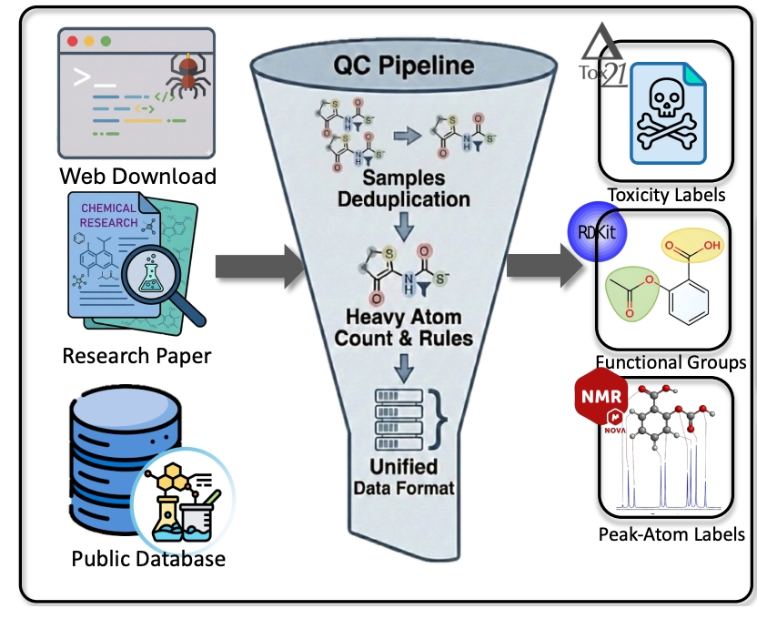
NMRGym: A Comprehensive Benchmark for Nuclear Magnetic Resonance Based Molecular Structure Elucidation
Zheng Fang, Chen Yang, Hai-tao Yu, Haoming Luo, Haitao He, Jiaqing Xie, Zhuo Yang, Jun Xia
KDD, 2026
Paper /
Code
TL;DR: Deep learning for NMR structure elucidation is impeded by reliance on synthetic datasets, which introduces domain shifts on real-world experimental spectra, and by the lack of standardized evaluation protocols. NMRGym is the largest and most comprehensive standardized benchmark from high-quality experimental NMR data to date: 269,999 unique molecules paired with high-fidelity 1H and 13C spectra, strict quality control, a scaffold-based split to prevent data leakage, and fine-grained peak-atom annotations, with an evaluation suite covering structure elucidation, functional group prediction, toxicity prediction, and spectral simulation.
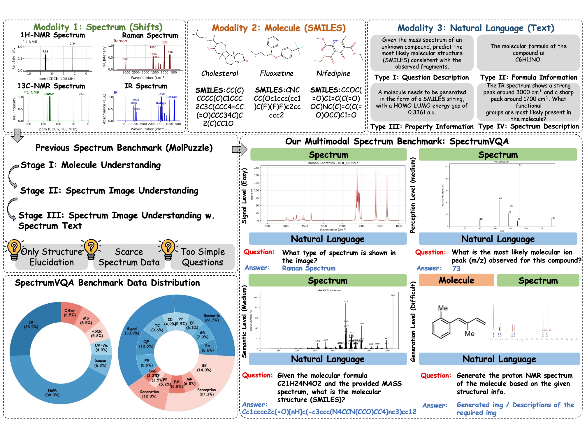
SpectrumWorld: Artificial Intelligence Foundation for Spectroscopy
Zhuo Yang, Jiaqing Xie, Shuaike Shen, Daolang Wang, Yeyun Chen, Ben Gao, Shuzhou Sun, Biqing Qi, Dongzhan Zhou, Lei Bai, Linjiang Chen, Shufei Zhang, Qinying Gu, Jun Jiang, Tianfan Fu, Yuqiang Li
KDD, 2026
Paper /
Code
TL;DR: Deep learning holds immense promise for spectroscopy, yet research and evaluation in this emerging field often lack standardized formulations. SpectrumLab is a unified platform that systematizes the field: a comprehensive Python library with data processing and evaluation tools and leaderboards, a SpectrumAnnotator module that generates high-quality benchmarks from limited seed data, and SpectrumBench, a multi-layered benchmark suite covering 14 spectroscopic tasks and over 10 spectrum types with spectra from over 1.2 million substances. Empirical studies with 18 cutting-edge multimodal LLMs reveal critical limitations of current approaches.
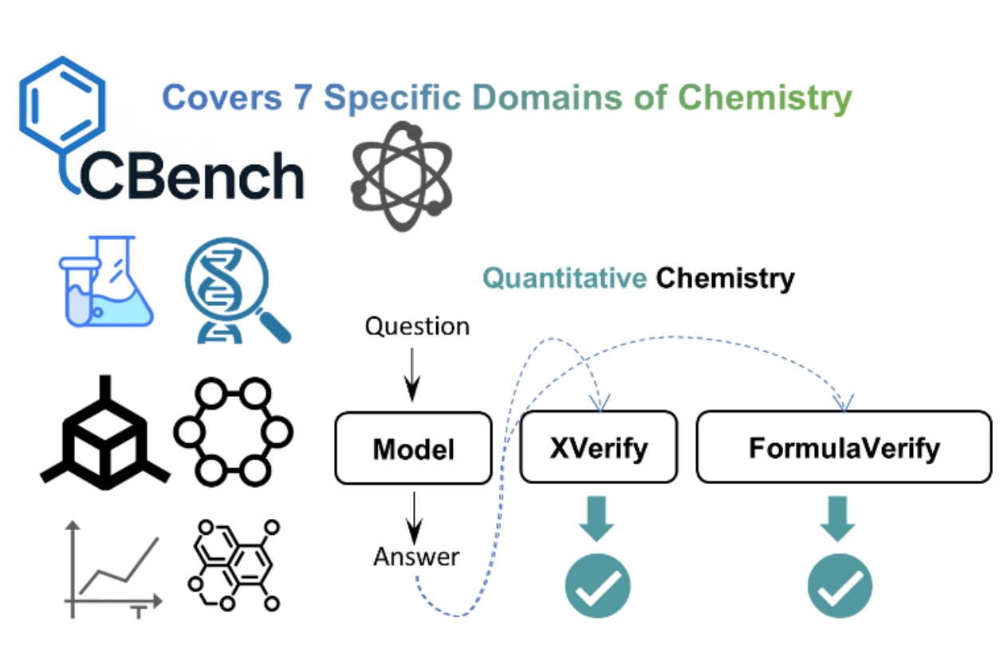
QCBench: Evaluating Large Language Models on Domain-Specific Quantitative Chemistry Jiaqing Xie, Weida Wang, Ben Gao, Zhuo Yang, Haiyuan Wan, Shufei Zhang, Tianfan Fu, Yuqiang Li
Journal of Chemical Information and Modeling, 2025
DOI /
Code
TL;DR: QCBench is a benchmark of 350 calculation-oriented chemistry questions spanning eight subfields — analytical, inorganic, organic, physical, polymer, and technical chemistry, biochemistry, and materials science — designed to test the domain-specific quantitative reasoning of large language models. Answers are scored with high-precision numerical tolerance and an answer-verification model, enabling systematic comparison across LLMs and chemistry categories.
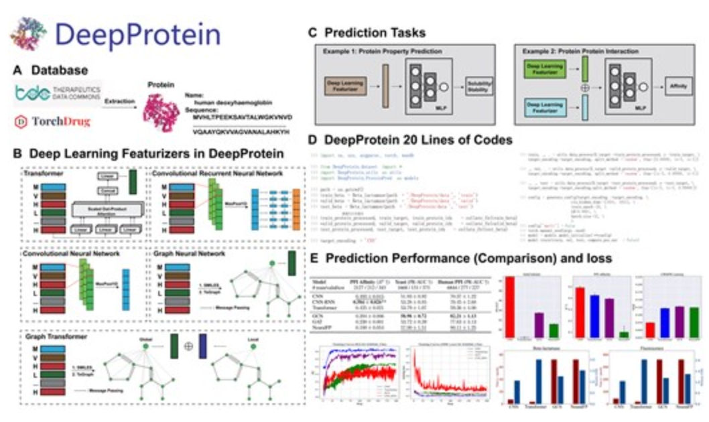
DeepProtein: Deep Learning Library and Benchmark for Protein Sequence Learning Jiaqing Xie, Tianfan Fu
Bioinformatics, 2025
arXiv /
Code
TL;DR: A comprehensive and user-friendly deep learning library for protein-related tasks, with a benchmark evaluating CNNs, RNNs, transformers, and GNNs across protein function prediction, subcellular localization, protein-protein interaction, and structure prediction. We also introduce DeepProt-T5, a series of fine-tuned Prot-T5-based models that achieve state-of-the-art performance on four benchmark tasks while remaining competitive on six others.